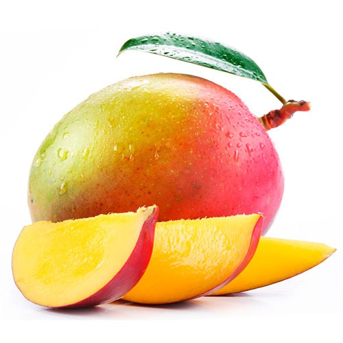

| Producto. | Descripcion. | Vista previa. | Precio. |
|---|---|---|---|
| Yuca |
La yuca es un tubérculo procedente de un arbusto. Su aspecto es leñoso con una corteza de color marrón oscuro mientras que su carne es de color blanco. Una de sus variedades es la mandioca dulce de la que se obtiene la tapioca. Se cultiva en los países tropicales de América, Asia y África. |
KG 1200 $ | |
| Mango |
El mango es una fruta tropical de origen asiático, de exquisito sabor, que posee unas excelentes cualidades nutricionales y que está indicada para todas las edades. Su cultivo está extendido por zonas de clima tropical y subtropical de todo el mundo. |
 | KG 8000 $ |
| Maracuya |
La maracuyá es una fruta tropical o también llamada fruta de la pasión, de un sabor un poco ácido y con aroma. Las variedades en tamaño, color y sabor, actualmente 40 países utilizan la maracuyá en el campo comercial para satisfacer las necesidades del mercado. |
KG 3000 $ | |
| Banano |
El plátano es una fruta cardioprotectora debido a sus altos niveles de potasio y su bajo contenido de sodio, que ayudan a mantener estables los niveles de presión arterial |
||
| Total Productos | 4 | ||